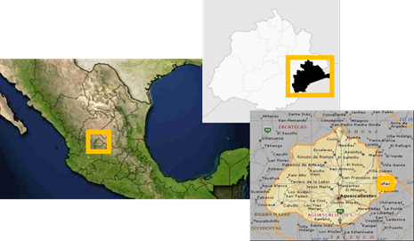

Posicionamiento normal
Georreferenciar: Es definir el lugar en que se encuentra un objeto dentro del espacio fisico. Para hecer esto utilizamos un sistema de coordenadas o una proyección geográfica. En un sistema de coordenadas se utilizan número a los que se le llaman así.
Clave geo-estadistica del municipio de Llano
La georreferenciación nos puede ayudar a ubicar con preciscion en un lugar en la tierra.